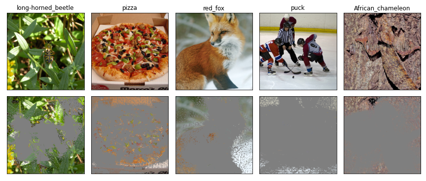
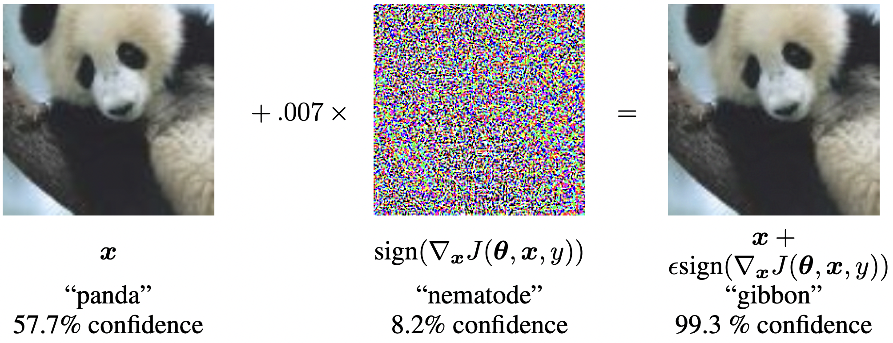
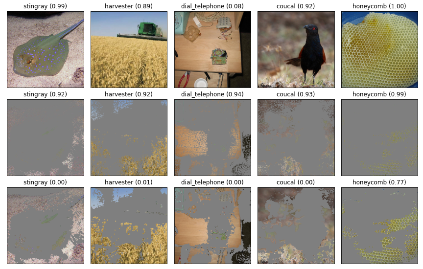
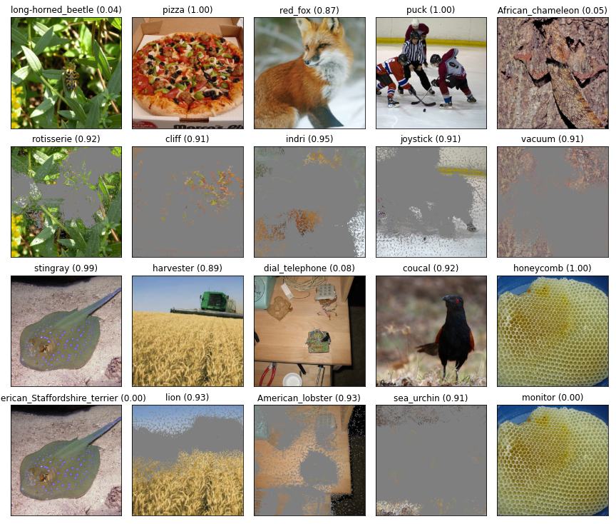
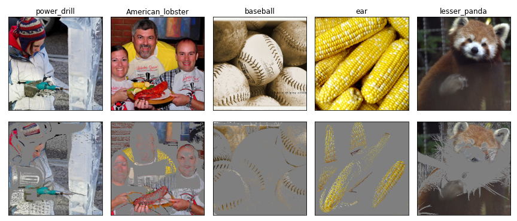

An Adversarial Perspective on “Overinterpretation Reveals Image Classification Model Pathologies”
Abstract
A recently published paper by Carter et al., 2021 suggests that neural network image classifiers overinterpret images, meaning that the classifier finds evidence for the correct class label based on non-human-interpretable patterns that are present in small subsets of pixels from the unmodified images. Carter et al. argue this idea by finding so-called Sufficient Input Subsets (SIS) and demonstrating that images that contain only these subsets are confidently and correctly labeled by the classifier. Since standard neural network image classifiers can only take as input an entire image, an image containing only a subset of pixels must replace the “removed” pixels with a color that is expected to have no effect on the output. The authors choose gray. The authors claim that the high confidence of image classifiers on SIS images arises from the non-human-interpretable but predictive content of the retained pixels in each SIS image. In this article, I will argue that this is not the case. Instead, I will argue that the “removed” (i.e., gray) pixels introduce adversarial-example-like patterns that cause the classifier to confidently classify the input. In fact, I will argue that classifiers do not find class evidence in the retained pixel subsets alone. Additionally, I will show that the algorithm proposed by the author can be used to construct adversarial SIS images that are confidently but incorrectly classified. This article highlights an example of the difficulty of interpreting neural network classifiers.
I Introduction
A recently published paper titled Overinterpretation reveals image classification model pathologies (Carter et al., 2021) argues that neural network image classifiers can often classify images correctly with only a tiny non-human-interpretable subset of the pixels of the original image. The authors argue that this result supports the idea that neural network classifiers overinterpret the input images—that is, the classifier finds sufficient evidence for the class label in restricted areas of the image that lack human-interpretable patterns.

The authors present an algorithm called Batched Gradient SIS (BGSIS) to find an image containing only a sparse set of unmodified pixels from an original image such that the classifier confidently classifies the new image correctly. The resulting image is called a Sufficient Input Subset (SIS) image. Importantly, neural network image classifiers can only take as input an entire image. Thus, a pixel can be “removed” from the image by setting it to a color which is expected to have no effect on the classifier. A seemingly reasonable choice for such a color is the average color across every pixel in the dataset—gray. Thus, each image found by the algorithm consists of a sparse set of unmodified pixels and the remaining pixels which have been set to gray. Examples of SIS images are presented in Figure 1 in the bottom row. BGSIS iteratively removes pixels (by setting pixels to gray) that least decrease the confidence.

The idea that neural networks can find class evidence from non-interpretable patterns is not new. Neural networks are well-known to be susceptible to adversarial examples (see Szegedy et al. (2014), Goodfellow et al. (2015), and Figure 2), in which small non-interpretable perturbations to an image cause the classifier to confidently but incorrectly label the image. Carter et al. argue that, unlike adversarial examples, the existence of confidently-classified SIS images suggest that classifiers find strong class-evidence in the non-interpretable but predictive areas of the original image, rather than added components.
In this article, I will argue that this is not the case. I will show that the set of pixels that BGSIS discovers as “sufficient” are often not sufficient, and rather it is the patterns introduced by the “removed” (i.e. gray) pixels that add information to the image to maintain or increase the confidence of a particular class. I will conclude by arguing that the patterns introduced by these removed pixels act like adversarial examples.
II The Batched Gradient SIS method does not find sufficient input subsets
Carter et al. argue that the image classifier finds evidence for its classification in the pixels that are identified by BGSIS as a Sufficient Input Subset. Here, I propose a modified experiment to control for the possibility that the “removed” (gray) pixels introduce patterns that might affect the classification score. I will retain every pixel that is identified by BGSIS as part of the SIS, and thus we should expect that if the SIS is sufficient for classification, then the classifier should continue to classify the image correctly with high confidence.
The experiment is as follows: first, I will run BGSIS to find an SIS, and then, I will “smooth” this subset by reintroducing pixels that are adjacent to pixels in the original SIS, i.e., I will uncover the gray pixels that are at the border between the gray and non-gray regions. I call the resulting image a Smoothed Sufficient Input Subset (SSIS). If the classifier finds evidence in the gray pixels adjacent to non-gray pixels in the SIS image, then smoothing the SIS image will remove this evidence. Carter et al.’s interpretation suggests that removing this evidence will not affect the classifier confidence but I will show that nearly all class evidence lies in these gray pixels.

The results of this experiment, shown in Figure 3, demonstrate that while the true-label confidence of the classifier is high for the original and SIS images, the confidence for the SSIS images is near-zero. The primary difference between the SIS images and the SSIS images is that, for the SSIS images, we remove the high-frequency patterns introduced by gray pixels adjacent to SIS pixels. Thus, the near-zero classifier confidence of true labels for the SSIS images suggests that the confidence of the classifier on the SIS can be, in large part, attributed to the high-frequency patterns introduced by the gray pixels themselves. Furthermore, each SSIS image contains every pixel that is included in the corresponding SIS but these images are nonetheless misclassified, which implies that each SIS is not sufficient for classification.
III SIS images are adversarial examples
The following experiments demonstrate that SIS images generated with the BGSIS algorithm can be thought of as adversarial examples: the BGSIS algorithm introduces patterns into the image by “removing” (coloring gray) pixels in a way that increases the confidence of the true label by way of gradient ascent. Thus, the classifier confidence in the true label on SIS images is often substantially higher than the corresponding classifier confidence on the original image. Furthermore, BGSIS can be modified to increase the classifier confidence of an arbitrary class label, thus creating adversarial SIS images.
First, I present a visualization of the BGSIS algorithm, reimplemented by me, and the classifier confidence associated with the image at each step. In addition, I present the classifier confidence for each iteration of the algorithm. BGSIS runs by iterative choosing the best pixels to remove (color gray) in batches until every pixel is removed. The algorithm outputs the image with as many removed (gray) pixels as possible so that the confidence remains above a preset threshold.
There are two key takeaways from Figure 4:
- As the algorithm runs, confidence reaches nearly 100% for each image. While the algorithm is designed to remove information by removing pixels thus lowering confidence over each iteration, it is instead evident that removing pixels increases the confidence, suggesting that the removed pixels introduce patterns that support classification confidence. As discussed above, I suspect that the patterns created at the boundary of the removed pixels increase the classification confidence.
- Notably the confidences of the classifier on the images of guinea pig, tailed frog, tripod and shield start at nearly 0%. These are cases where the classifier incorrectly classifies the original image. However, Figure 4 shows that the BGSIS method increases the confidence of the resulting SIS image well above the 90% threshold, suggesting that even when patterns supporting a particular class are not present or only minimally present, setting pixels to gray will increase the confidence.
These results suggest that the BGSIS method is essentially a search for an adversarial set of gray pixels in an image. The algorithm operates by computing the gradient of the confidence with respect to the image, and then removes (colors gray) pixels to minimally decrease (which, in this case, is the same as to maximally increase) the confidence. Broadly, this is the same structure as a gradient-based search for an adversarial example. Thus, it is no surprise that this algorithm will act similarly to any adversarial example search algorithm.
The authors include a similar figure to my Figure 4 in the appendix of their paper (Figure S15 from their paper). Their figure illustrates the classifier confidence for each iteration of the algorithm, and includes substantially more data than our Figure 5. Similarly to my Figure 4, they find that the classifier confidence on the true label of each image almost always increases quickly to nearly 100%.
To explore the idea that this method can be used to construct adversarial SIS images in more depth, I construct explicitly-adversarial SIS images using the BGSIS algorithm with the goal to cause the classifier to identify a particular (adversarial) target label with a confidence above 90%. That is, instead of removing pixels to increase the confidence of the true label of the image, I remove (color gray) pixels to increase the confidence of the adversarial target label.

These adversarial SIS images—shown in Figure 5—have similar properties to the original SIS images from Figure 1: for many of the examples, the confidence of the classifier is above 90%, and most of the image has been removed (set to gray). Consistent with our previous experiments, the existence of adversarial SIS images suggests that the removed (gray) pixels themselves carry information pertinent to classification.
To illustrate this idea visually, I present (admittedly, somewhat cherry picked) SIS images generated using adversarially-trained classifiers which are known to have more-human-aligned gradients (Engstrom et al., 2019).

The removed pixels form interesting patterns that appear semantic when the classifier is robust (Figure 6). The semantic nature of the removed pixels are not (always) an artifact of outlining a semantic feature present in the original image, and instead, can create semantic looking patterns that are not present in the original image. For example, the image of the ears of corn are masked to appear as ears of corn that do not align with the original ears of corn. Similarly, the image of the baseball is masked to include the appearance of a larger baseball than appears in the original image. The image of the panda is masked to include the appearence of either whiskers or possibly long thin bamboo-type leaves. While this experiment is less rigorous, it demonstrates visually how removed pixels can form patterns that are meaningful to the classifier.
IV Removed pixels are real statistical patterns
Carter et al. find that they can train models on the 5% pixel-subset images that attain minimal accuracy loss compared to the original models and they conclude that the 5% pixel subset has real statistical patterns that correlate with the label well enough on which to base a prediction. I would suspect that a better experiment to determine if this is true would be to train on the SSIS images from above, although it is not an experiment that I will present here due to the computational cost of training a new model. As an alternative hypothesis to Carter et al., it is possible that, instead of the 5% remaining pixel subset, the patterns generated by the removed (gray) pixels are real statistical patterns that are useful for classification. The idea that you can train a classifier on adversarial examples and yield non-trivial generalization accuracy has been shown by Ilyas et al. (2019) in the paper Adversarial Examples Are Not Bugs, They Are Features. A result suggesting that training on the adversarial patterns introduced by the removed pixels of sufficient input subsets generated by BGSIS would be consistent with Ilyas et al.
V Conclusion
Carter et al.’s paper raises a very important point: be cautious about attempts to interpret a deep learning model, as the results are often subject to the bias of the interpretation algorithm.
I don’t think that the results that the authors present are wrong or uninteresting—quite the contrary. It is striking that 95% or more of the pixels in an image can be replaced with gray and that a classifier will maintain confidence in its classification. However, unless there is a way to explicitly remove input from the model, the interaction between the removed input and the remaining input, such as the patterns made at the border of the removed grey pixels, will always have a possibility of affecting the behavior of a classifier.
Perhaps a better approach would be to define a sufficient input subset as a subset of pixels such that, if present, will always cause the classifier to confidently predict the label under any perturbation to the other pixels. I doubt this will be useful, first because I would speculate that such a set would be difficult to compute, and second because neural networks are so vulnerable to adversarial examples that such a set would likely consist of nearly every pixel in the original image, so as to not introduce many degrees of freedom that might allow a vulnerability to arise.
I would speculate that similar approaches to interpretability that aim to determine the contribution of individual pixels will be vulnerable to similar explanations in terms of adversarial examples.
Technical details
The code to reproduce my experiments is available at my GitHub page.
The classifiers I used were downloaded from this repository from Microsoft. I used the standard ResNet50 (ɛ=0) and an adversarially-trained ResNet50 (ɛ=3).
All images you see in this article are from ImageNet.
References
- Carter, B., Jain, S., Mueller, J., & Gifford, D. (2020). Overinterpretation reveals image classification model pathologies. Advances in Neural Information Processing Systems, 34.
- Szegedy, C., Zaremba, W., Sutskever, I., Bruna, J., Erhan, D., Goodfellow, I., & Fergus, R. (2014). Intriguing properties of neural networks. 2nd International Conference on Learning Representations, ICLR 2014.
- Goodfellow, I. J., Shlens, J., & Szegedy, C. (2015). Explaining and harnessing adversarial examples. 3rd International Conference on Learning Representations, ICLR 2015.
- Engstrom, L., Ilyas, A., Santurkar, S., Tsipras, D., Tran, B., & Madry, A. (2019). Adversarial robustness as a prior for learned representations. arXiv preprint arXiv:1906.00945.
- Salman, H., Ilyas, A., Engstrom, L., Kapoor, A., & Madry, A. (2020). Do adversarially robust imagenet models transfer better?. arXiv preprint arXiv:2007.08489.
- Ilyas, A., Santurkar, S., Tsipras, D., Engstrom, L., Tran, B., & Madry, A. (2019). Adversarial Examples Are Not Bugs, They Are Features. Advances in Neural Information Processing Systems, 32.